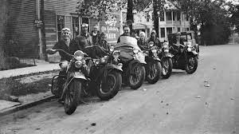

Es una empresa creada para la compra y venta de vehiculos de dos ruedas que tienen como condicon especifica de estar usadas pero en un buen esatado, siendo asi un enlace para esos amantes de las motos de bajos presupuestos que desean tener su moto propia.

ACTUALIDAD
En nuestra actualidad es ofrecer siempre a nuestros clientes productos de alta calidad, eficaces y al mejor precio. Contando por supuesto con un asesoramiento experto para solucionar cualquier duda o problema.Como empresa también intentamos promover el espíritu motero destacando todas y cada una de sus ventajas.Todo con el fin de dar solución a las necesidades de nuestros clientes, satisfaciendo y superando sus expectativas iniciales.
FUTURO
Como empresa es conseguir ser referentes en el mercado de recambios de motos español, y en un futuro, europeo. Ser una empresa respetada y fiable en el mercado, obteniendo el mayor grado de satisfacción de nuestros clientes gracias a nuestro trato y servicios intachables. También conseguir ofrecer la mejor relación calidad-precio del mercado, trabajando día a día para que todos nuestros clientes obtengan los mejores productos y últimas novedades. Y por último, y más importante, crear un vínculo de confianza entre la empresa y nuestros clientes.